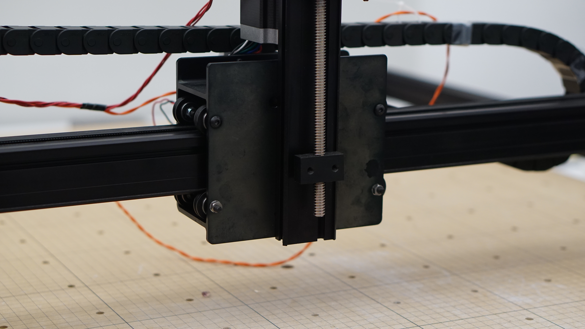
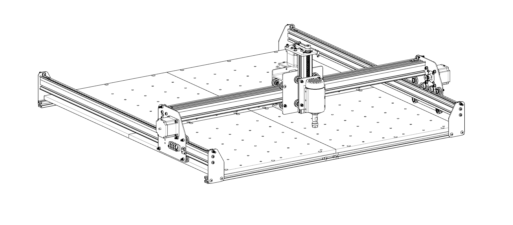
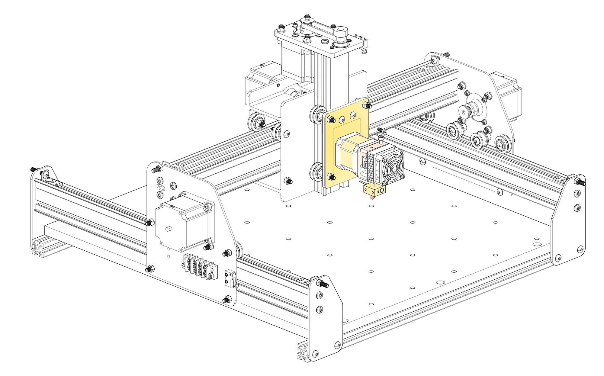

Manual Extrusion of material
Electronics Setup
Hardware Assembly
Steps
All the parts (not tools) mentioned below can be found here in parts list
Modifying the Extruder
The intent is to disassemble the 3D printer filament extruder and modify it to extrude the glass rod.
Note: The CAD file does not mention the screw tap pitch that holds the two modified parts of the extruder. Design it according to your convenience.- Refer to the CAD models with correct annotations for measurements while machining.
- Some dimensions may vary, it is highly suggested that you use the models as a reference and adjust the dimensions according to your extruder and glass rods.
- Use scribe tool and set squares to mark the milling points. Clamp the pieces at correct level and use a milling machine to make the modifications.
- Fit the rubber seat washer on the motor gear.
- Test if the glass rod passes well through the extruder. Look for any shaky or loose parts. The movement should be firm and smooth.
Preparing the Extruder Mount
Note: The CAD design may vary for different extruders. Double check every measurement using a pair of digital calipers and mark the machining lines with healthy tolerences.
- Cut the Aluminium 6061 block in two pieces using a cold saw. The size of each block is equal to the bounding box around the designed CAD model.
- Mark the cutting lines and projections using digital calipers, a scribe tool and set squares.
- Use a milling machine to trim the sides to the required dimensions.
- Finally use the milling machine to create the required holes for screws.
- Test it with the modified extruder and make sure the mount doesn’t create any hinderences in the movement of the glass rod.
Vacuum Assembly
-
-Assemblying the Machine
Note: First assemble the modified extruder and the extruder mounts on a Spindle Mounting Plate. Test the movement of the glass rod by simply running the stepper motor of the extruder in each direction.
- Dismount the spindle if your machine came with it.
 - Take a 500mm Aluminum Extrusion and cut it in two halves
- Mount each each halve on a seperate Spindle Mounting Plate; one for left side that will hold the propane torch and one for the right side that will hold the vaccum tube.
- Assemble the plates in the configuration shown below.
- Make a hole in two hose clamps for mounting them on one of the Aluminium Extrusions using button cap screws and T-slot screws.
- Use zipties as shown in photos to mount the propane torch on othe Aluminium Extrusion.
- The torch should feel secured in all 3 axis. The only relatively free movement will be rotational around Z-axis. Rotate the the torch to aim at the glass rod. Use any appropriate methods to lock the position of the torch in place.
- Run the stainless steel hose through the hose clamps. Point its end at the glass rod and across the propane torch tip.
- Find a correct sweet spot for the suction of the air.
Note: If it is too close to the rod, the molten glass might get sucked in as well. Make sure it is close enough to sufficiently evacuate the flame away from everything after it heats the glass rod.
- Dismount the spindle if your machine came with it.
Gallery
Manual Extrusion of material
Parts List
X-Carve Machine
You may order one without the Spindle and Motion Controller.
This project is based on following configuration:- 1000mm Rail Kit
- ACME Lead Screw Kit
-
- Part Number: 30287-01
-
- Part Number: 26049-01
- Manually cut in 250mm Halves
1X Pack of Tslot screws
- Pitch: 0.5mm
- Part Number: 25281-01
1X Pack of Button Head Cap Screw
- Length: 16mm
- Pitch: 0.5mm
- Part Number: 25286-11
1X Pack of Nylon Insert Lock Nut
- Part Number: 30265-02
- Pitch: 0.5mm
Multipurpose 6061 Aluminum ( Link to CAD Models)
- Rectangular Bar 3”x3”x6”
- Part Number: 9008K62
1X Seat washer
- 1/4” Faucet Seat Washer
- Model Number: 80359
- Part Number: 711262
-
- Part Number: 8496K22
- *This project used a locally sourced sampler set of approximately same specifications.
-
- Model Number: CDF-375H
- Silencer Optional
NPT Fittings (May be available in local hardware stores)
- Watts LFA-16 Compression Coupling
- 1/4” OD x 1/4” FIP
- Industrial Shape Hose Coupling
- 1/4” NPTF Male
- Part Number: 6718K26
- AllstarBrass Straight Inverted Flare Female Brake Line Adapter Fitting
- 1/8” NPT Male to 1/4”
- Part Number: ALL50121
- Watts LFA-16 Compression Coupling
High Temperature Corrosion Resistant Braided Hose
- Flexible, 3/8 NPT Male Fittings
- Part Number: 5680K12
- Length 72” and up
-
- Model: TX-916
-
- Model: TS8000BZKC
1X Pack Hose Clamps
- 3/4” ID
- Part Number: 5362K12
G-Clamps
Zipties
-
- Model Number: Porter-Cable C3151
- Capacity: 4.5 GALLON 150 PSI
Notes:
These parts are an indication of what was used and tested during the documentation of this project. Feel free to experiment with different designs and materials.
Software Setup
Manual Extrusion of material
CAD Models

X Carve 1000mm
The model for the X-Carve 1000mm and its parts is available on GrabCAD Workbench
Extruder Original CAD
The reference file for the 3D printer extruder was taken from GrabCAD Library

Extruder Modification
The extruder will require to be machined in order to enlarge the feed and extrusion openings. More details can be found in the linked CAD files. It is highly recommended to carry out your own measurements specific to the extruder you own. These drawings are intended to provide a guide to share the required modifications.
Download .3dm Rhino File
Download .stp Rhino File (without annotations)
Aluminium Mounts for the Extruder
You’ll need some basic experience for Lathe Machining. Please sought help from a workshop technician for extra help. The drawings are annotated with measurements in Rhino file. They may vary depending upon the model of your extruder and the glass rods you own. Again, these are closest possible representation of the hardware setup.
Download .3dm Rhino File
Download .stp Rhino File (without annotations)
Final Assembly

Introduction

Quartz is a material research project that unites state of the art computer-aided rapid prototyping technology (CNC) with glass - one of the most ubiquitous materials for storage and packaging.